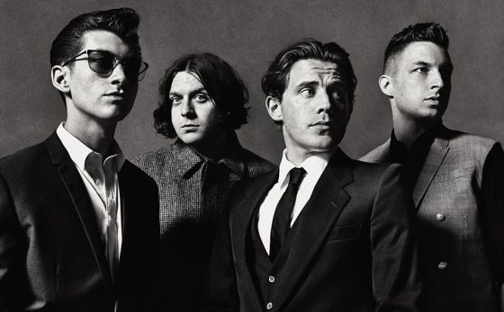

Artic Monkeys
Los Arctic Monkeys fueron considerados como una de las primeras bandas en hacerse conocidas al público gracias a la difusión de sus canciones por Internet, por lo cual se los catalogó como «la banda que pudo haber cambiado el mercado de la música». Esto le valió para que su álbum de estudio debut, Whatever People Say I Am, That's What I Am Not (2006), se convierta en el disco debut británico más vendido en la historia, con más de 300 mil copias vendidas en su primera semana en el mercado Ganó el premio al Mejor Álbum Británico en los Brit Awards 2007. El segundo álbum de la banda, Favourite Worst Nightmare (2007), contó casi con el mismo éxito, ganando también el premio al Mejor Álbum Británico en los Brit Awards 2008. Luego pasarían a sacar Humbug (2009), un proyecto más experimental, y Suck It and See (2011).

La fama mundial de la banda aumentaría gracias al lanzamiento de AM (2013), el quinto disco de la banda, y el que obtendría mayor éxito comercial.6 AM se convirtió en su segundo álbum en entrar en el Top 10 del Billboard en Estados Unidos, siendo también certificado platino en ese país. En los Brit Awards 2014 la banda consiguió por tercera vez el premio al Mejor Álbum Británico. Su sexto álbum, Tranquility Base Hotel & Casino (2018), se alejó de los sonidos tradicionales de la banda, enfocándose en sonidos más basados en el piano, e incorporando rock psicodélico, space age pop, lounge y glam rock, además de elementos de jazz. Recibió una nominación a Mejor Álbum de Música Alternativa en los Premios Grammys 2019, su segunda en la categoría después de Whatever People Say I Am, That's What I Am Not.